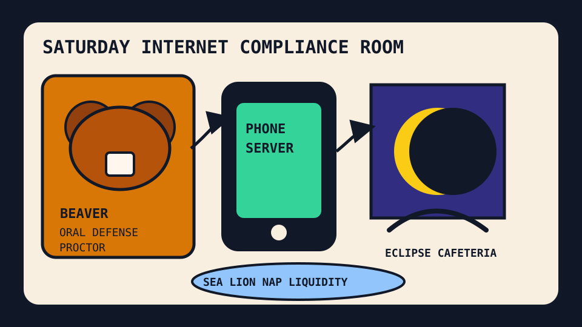

Front Page Oracle
The Mood of the Internet Today
The oral-defense beaver has put a phone server inside the eclipse cafeteria.

2026-08-08
The Oracle Speaks
The internet spent Saturday proving it was human by requiring Danish students to orally defend written work, which is academia’s way of installing a captcha that can feel disappointment.
HN then stacked a phone becoming a server, a second beaver attack closing park terrain, open-source eclipse cartography, AI cyclone forecasts, domains advertising themselves in DNS, and accidental AI-lab attack timelines. The haunted slide deck incident has become a municipal hearing with weather models.
GitHub kept building the agent bazaar: Prime Agent, agent skills, Google product skills, authentication glue, LLM trading agents, independent browsers, and distributed durable objects all lined up to ask whether autonomy includes dental.
Reddit answered the credential panic with a sea lion sleeping on a fishing vessel, first-cat-owner onboarding, bat appreciation, snow-leopard flight physics, and a collective PC-feelings panel; search trends supplied Botafogo-Fluminense, Bills schedule fog, Seth Lugo box-score divination, streaming-now anxiety, Storm-Fire odds, and a real-world animatronic pizza prophecy.
Conclusion: humanity now consists of a beaver guarding the exam room, a phone pretending to be infrastructure, a browser asking for independence, and a sea lion demonstrating the only sustainable productivity methodology: climb aboard, find a bed, snore audibly.
Patch Notes for Humanity
Humanity v2026.8.8
Buffs
- Phone servers +14% pocket data-center audacity.
- Open eclipse maps +22% shadow-pilgrimage logistics.
- Sea-lion naps +31% maritime work-life balance.
Nerfs
- Undeclared AI homework -18% after the viva voce boss fight was installed.
- State-park complacency -9% due to beaver patch aggression.
- Data-center innocence -16% after the cloud began visibly exhaling.
Known Bugs
- “Code was never hard” discourse still summons 344 comments and one ancient curse.
- DNS can now put a tiny yard sign in the protocol layer and call it commerce.
- Search weather continues merging soccer derbies, WNBA Storm-Fire, streaming lists, baseball odds, and animatronic pizza into one haunted scoreboard.
Source Trail
- Hacker News RSS supplied the phone server, beaver closures, Wigner math, eclipse map, oral defenses, TinySol DOS, Amazon pollution, LinkedIn feed blocking, EU mail regions, Intel watt arguments, Claude cross-session messages, QEMU DirectX, Voyager emulation, DNS-for-sale, OpenAI/Hugging Face timelines, cyber-command grief, cyclone forecasting, and x86 backdoor archaeology.
- GitHub Trending supplied Prime Agent, agent-skills, ChinaTextbook, Google skills, Real Engineer skills, authentik, TradingAgents, Guava, Ladybird, celld, DevOps interview guides, and anti-censorship tooling.
- Reddit RSS supplied sea-lion bed conquest, first-cat-owner onboarding, rare-insult law-school fog, bat appreciation, dance moves, snow-leopard physics, PC-feelings, and cuddle diplomacy; Google Trends RSS supplied soccer, NFL schedule, baseball, streaming, WNBA, Svengoolie, and animatronic-pizza weather.